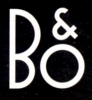
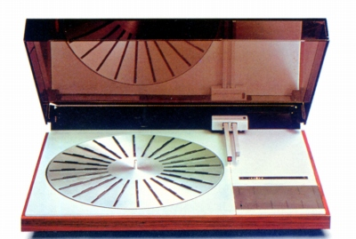
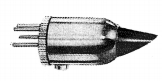
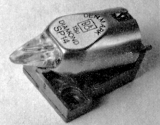
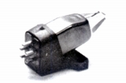
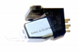
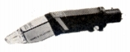
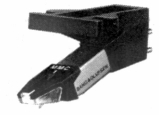

B&O （バング・アンド・オルフセン）
1925年に創業したデンマークのオーディオ・ビジュアル製品のブランド。デザインが非常に優れていることで有名。そのデザインは、オーディオにおけるインダストリアル・デザインの代表的存在として高く評価されており、CPを問わなければ、音質についても手堅い製品が多い。その製品はデザイン故に他社のコンポと組み合わせるのには難しい部分があるが、カートリッジについてはローマス・軽針圧製品の一つとして一般にも使われた。
1970年代始めにはゼネラル通商が代理店を務めていたが、その後アクステックシステム、イースト・アジアチックを経て、バング・アンド・オルフセン・ジャパンに変わった。1990年代には日本マランツの扱いとなった時期があるが、2000年頃には再びバング・アンド・オルフセン・ジャパンとなっていた。アナログ関連製品については手元資料で確認できるのは1995年の日本マランツ扱い時代までで、1999年時点では確認できない。

（Beogram 4002 標準装備はMMC4000）
B&O （バング・アンド・オルフセン）の製品を以下のように分類する。（この分類は個人的な意見で、メーカーの分類ではありません）
�T.カートリッジ(MI型）
B&O （バング・アンド・オルフセン）のアナログディスクプレイヤーは、自社のカートリッジをリード線を介さずにダイレクトに接続する場合が多い。その為一般のプレイヤーでは専用のシェルまたは付属のホルダーを介して接続する。発電形式は同社がMMCと呼ぶMI型の一種。

�@SPシリーズ
SP10〜14は共通デザイン、SP15はMMC四桁モデルに似たデザインで、構造も針交換不可と、別系統。

(SP14)�AMMC四桁シリーズ

(MMC5000)MMC3000 MMC4000 MMC5000 MMC6000
�BMMC20シリーズ
当初は1978年に単体で販売されたが、1980年頃より専用シェルに装着された形でも販売された。なおシェル付きモデル導入後、呼び名が変わった（例
MMC20S→シェルなし：MMC20SB、シェル付き：MMC20SC)。


（左 MMC20CL（後のMMC20CLB) 右 MMC20CLC)�CMMC一桁シリーズ
代理店変更（イースト・アジアチック→バング・アンド・オルフセン・ジャパン）後登場した、同社最後？のシリーズ。

(MMC1)